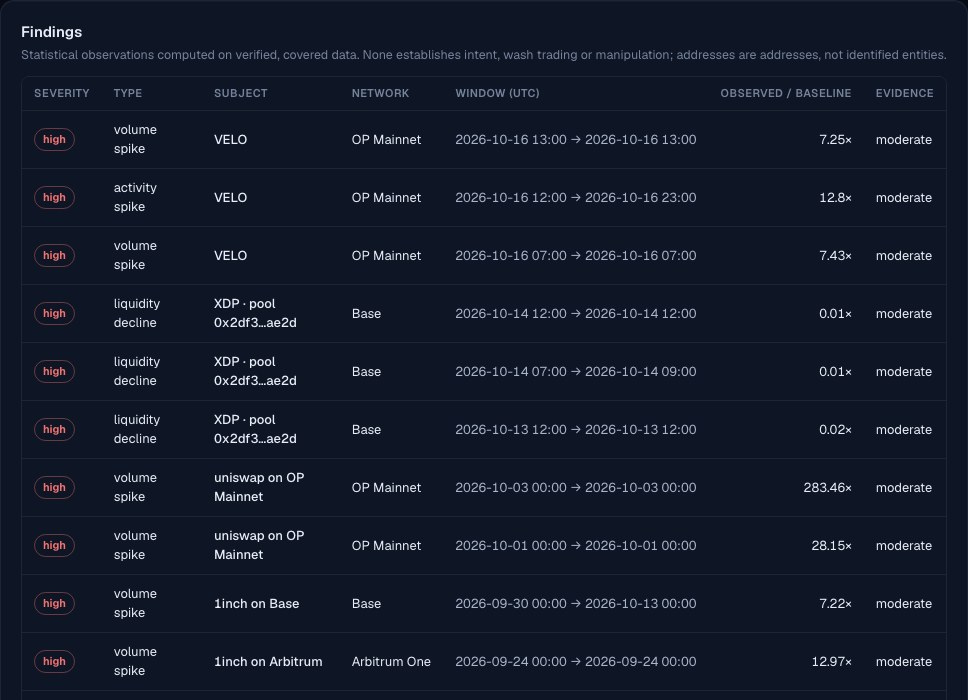

DeFi Intelligence
Multi-chain DeFi analytics and anomaly intelligence on verified on-chain data, with AI that can only explain numbers it can prove.
Independent software, not affiliated with or endorsed by any protocol it analyses. This static page shows precomputed, reviewed snapshots generated on 2026-10-17. It is not live data and it does not connect to any API.
What it does
Verified ingestion
Public JSON-RPC on Base, Arbitrum One, OP Mainnet and Ethereum, through Airflow into ClickHouse. Coverage is proven per run and data is published only after every quality gate passes.
Universal token explorer
Any token contract: on-chain identity, pool discovery, a support level per pool, collection of missing windows only, per-pool coverage, quality checks and an evidence-backed report.
Receipt-verified decoders
Uniswap v3-, Uniswap v2- and Solidly-style pools. A family counts as supported only when its decoded swaps match transaction receipts exactly on several networks.
Anomaly intelligence
Level shifts against a frozen baseline, plus concentration, imbalance, divergence and repetitive patterns. Every finding shows its facts, method, limitations and alternative explanations.
Honest valuation
Stablecoin legs or verified hourly prices only; unvalued swaps are never counted as $0. Pool-event volume and transaction-net volume are reported separately.
Private, model-agnostic AI
Ollama (tested) or any OpenAI-compatible API server — vLLM, llama.cpp or LM Studio are integration options through the same adapter. Anthropic and OpenAI are optional and off by default; nothing paid runs until an administrator authorises it within limits. Every sentence cites its facts, and the numbers, terminology and claims are checked before an answer is shown.
Conversational analyst
Multi-turn, multilingual questions (tested in English, Turkish and German). Follow-ups keep the token and topic; each answer is re-grounded in that turn's verified facts or falls back to a deterministic one.
Operations
Service health, pipeline runs and failures, data freshness per token, quality audits, verified backups and alerts on one page, plus organisations with role-based access and an audit log.
Verified research examples
Aggregator volume anomaly on Base
1 Sep → 15 Oct 2026, audited, 3,293,676 decoded events. Window volume $458.56M, with 90.2% from one automated account; peak 10.3× the pre-onset median; volume excluding that account −15.5% against baseline (corrected by the audit from −20.5%).
ARB on Arbitrum One
3 ingested pools, 14 Oct 12:00 → 17 Oct 03:00 UTC. 63,089 pool swap events, valued volume $17.06M: 36.8% through stablecoin legs, 63.2% through verified hourly prices, 0 unvalued. Pass-through routing 0.1%.
VELO on OP Mainnet
12 pools discovered, all receipt-verified; 6 ingested. The Solidly pools carried 62,302 swap events but only 463,647 VELO, while the v3 pools carried 3,266 events and 12.2 M VELO. Coverage of the ingested pools is complete; market coverage is not, and the report says so.
Findings are statistical observations. They never establish intent, manipulation or wash trading, and addresses are not identified entities.
Screenshots




Local model benchmark
Reviewed snapshot (2026-10-17): the same frozen fact set (10 questions in English, Turkish and German; 8 answered by the model, 2 declined by deterministic pre-checks) and the same validators, on a 16 GB laptop.
| Model | Accepted by validation | Grounding failures (deterministic fallback) | Avg latency | Resident memory |
|---|---|---|---|---|
| gemma3:4b | 8 / 8 | 0 | 8.3 s | 2.9 GB |
| qwen3.5:9b | 6 / 8 | 2 | 22.4 s | 5.7 GB |
One machine, not a performance promise. Larger models and GPU inference servers have not been benchmarked yet.
Deployment profiles
| Profile | Target | Notes |
|---|---|---|
| A — local developer | ~16 GB laptop | Small or medium local models, conservative context, memory guard, ingestion paused by default |
| B — business server | Linux, 32–128 GB, optional NVIDIA GPU | Only TLS is exposed; ClickHouse, Airflow and inference stay internal; separate Airflow services |
| C — enterprise | Kubernetes, GPU inference servers | Network policies, external secrets, model serving separate from the API |
These profiles are starting points, not performance promises. Capacity depends on the measured hardware.
Limitations
- Only the listed networks and verified decoder families are analysed, and only pools that were discovered and ingested. Other venues are not counted.
- The examples cover historical, ingested windows; nothing on this page is live.
- Local AI quality depends on the model. Validators reject ungrounded or forbidden statements but do not correct grammar.
- Optional Dune and remote AI integrations are off by default.